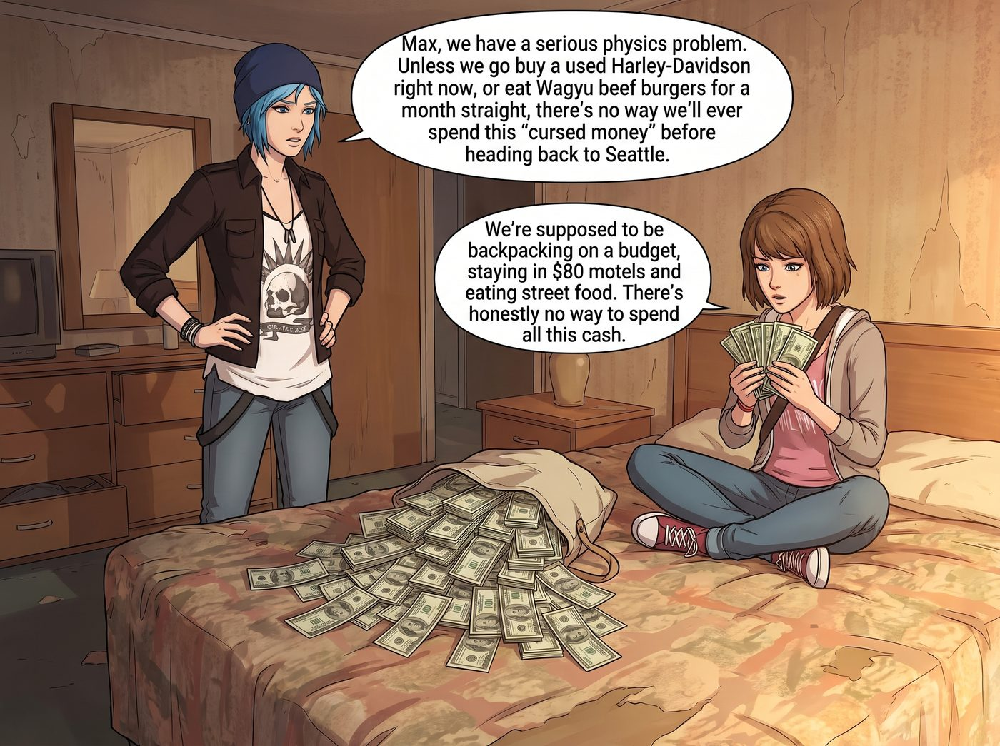
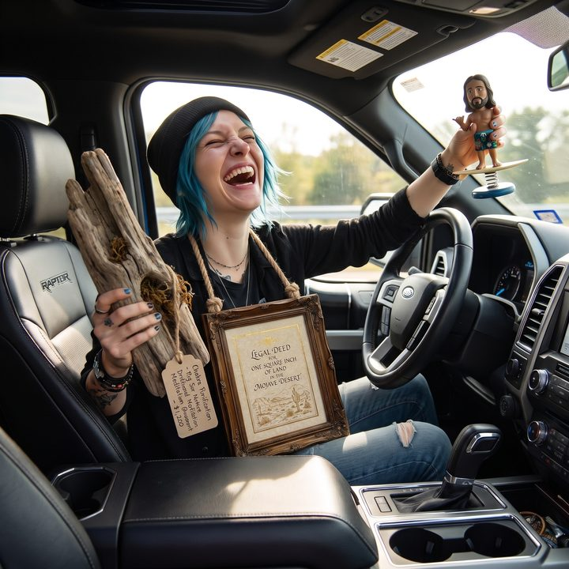

奇葩伴手禮


當 Chloe 將那個裝著一萬多美元現鈔的帆布包倒在汽車旅館的床上時，那一堆綠花花的富蘭克林頭像依然像座小山一樣壯觀。
「Max，我們遇到了一個嚴重的物理學難題。」Chloe 雙手叉腰，看著床上的鈔票，「除非我們現在去買一輛二手哈雷機車，或者連續吃一個月的和牛漢堡，否則我們這輩子都沒法在回西雅圖之前把這筆『被詛咒的錢』花光。」
Max 盤腿坐在床上，拿起一疊鈔票扇了扇風：「我們可是打著窮遊的幌子出來的，住的是 80 塊錢的汽車旅館，吃的是路邊攤。這錢確實花不掉。」
「那就只能買伴手禮了。」Chloe 的眼睛裡突然閃爍起那種只有在準備惡作劇時才會出現的危險光芒，「而且，我們不能買那種正常的鑰匙圈或明信片。我們要買那種……能精準刺痛她們靈魂的加州奇葩土產。我們要讓她們知道，沒有她們的公路旅行，是多麼的腐敗且荒謬。」
兩個小時後，她們將皮卡車停在了威尼斯海灘（Venice Beach）和附近幾家充滿了「加州嬉皮士與智商稅」氣息的奇葩精品店前，開始了一場喪心病狂的採購。
【一號獵物：Victoria Chase 的「品味羞辱」】
「大小姐最近不是迷上了『粗獷主義』和『廢土藝術』嗎？」
Chloe 站在一家裝潢極度做作的波希米亞風精品店裡，指著牆上掛著的一根造型扭曲、看起來就像是剛從海灘上隨手撿來的枯樹枝。
標籤上寫著：「脈輪淨化·大蘇爾（Big Sur）原生漂流木冥想擺件 —— $1,200」。
「這就是一根破木頭，Chloe。」Max 震驚地看著標價，「而且它甚至沒有經過防腐處理，我發誓我剛才看到裡面有隻蟲子爬出來。」
「這不叫木頭，這叫『西海岸的有機靈魂』！」Chloe 狂笑著從包裡點出十二張百元大鈔拍在櫃台上，「妳想像一下，當 Victoria 收到這根價值一千兩百刀的破樹枝時，她那種想罵人又怕暴露自己『不懂前衛藝術』的扭曲表情。她絕對會把它供在畫廊最顯眼的位置，然後每天晚上對著它懷疑人生！」
【二號獵物：Kate Marsh 的「信仰衝擊」】
對於 Kate，她們來到了一家充滿了廉價塑膠味和沙灘褲的紀念品店。
Max 的目光鎖定在了一個放置在汽車儀表板上的搖頭娃娃（Bobblehead）。
那是……耶穌。
但他沒有被釘在十字架上，而是穿著一條夏威夷印花衝浪褲，腳下踩著一塊衝浪板，還對著鏡頭比了一個「Hang Loose（放輕鬆）」的手勢。
「衝浪耶穌？」Chloe 挑了挑眉毛，「這是不是有點太褻瀆了？Kate 會不會嚇得給我們做一整個月的驅魔儀式？」
「這就是加州的文化衝擊啊！」Max 忍不住笑了出來，把衝浪耶穌放進購物籃，「Kate 是個天使，她肯定不知道該對著這個娃娃祈禱，還是該給他披件衣服免得他著涼。
不過為了補償她……」
Max 轉身走到旁邊的高級農產品區，花 300 美元買了一小瓶號稱「加州陽光沐浴、人工授粉、零碳排放」的頂級有機香草莢精粹。「這個給她烤餅乾用。打一巴掌再給一顆糖，這才是送禮的藝術。」
【三號獵物：Lily 的「終極行政特洛伊木馬」】
給 Lily 挑禮物是最難的。普通的物品根本無法引起這個行政黑魔法師的興趣，甚至會被她當成「無效資產」直接報廢。
直到她們在一家專門賣稀奇古怪契約的獨立書店裡，發現了一個裝在精美相框裡的燙金證書。
「Max，妳看這個。」Chloe 的聲音裡透著一種發現了核武器般的顫抖。
那是一份「莫哈韋沙漠（Mojave Desert）一平方英吋土地的合法地契」。
售價：50 美元。
「這有什麼用？一平方英吋連種棵仙人掌都不夠。」Max 疑惑地問。
「妳不懂！這不是一塊地，這是一個『行政特洛伊木馬』！」
Chloe 激動地抓著 Max 的肩膀，眼裡閃爍著惡毒的光芒：
「這是一份號稱在聯邦土地管理局（BLM）備案的合法地契！這意味著什麼？這意味著只要 Lily 簽下名字，她名下就擁有了一筆位於加州的『不動產』！
她將不得不為這一平方英吋的沙子申報加州的地產稅！她必須研究當地的水權法規、環境影響評估（EIA），甚至還要提防這塊地會不會被列入『沙漠陸龜棲息地保護區』！
我們花 50 塊錢，就能給她的大腦塞進至少 500 個小時的行政報表和合規計算！這會讓她的強迫症當場超載！」
Max 倒抽了一口涼氣，看著 Chloe 的眼神就像在看一個真正的惡魔：「Chloe……妳什麼時候變得這麼有心機了？」
「跟那個小書呆子待久了，總得學會點用魔法打敗魔法的手段。」Chloe 得意地大笑，毫不猶豫地買下了那份地契。
當天傍晚，皮卡車的後座上堆滿了這些荒謬至極的戰利品。
一萬兩千美元還剩下不少，但這三件禮物所蘊含的「攻擊力」，已經達到了滿級。
Max 坐在副駕駛座上，舉起寶麗來相機。
鏡頭裡，Chloe 左手拿著那根 1200 美元的「靈魂漂流木」，右手舉著「衝浪耶穌」，胸前還掛著那份會引發稅務災難的「一平方英吋地契」，笑得像個剛剛洗劫了整個西海岸的超級反派。
「喀嚓。」
照片吐出，定格了這場充滿了惡意與愛的窮遊採購。
Max 拿著奇異筆，在照片背面寫下： 『規則第 74 條：不要得罪兩個在公路上有錢沒處花的廢柴。因為她們會用最昂貴的垃圾，對妳的品味、信仰和行政系統，發動最精準的降維打擊。等著收快遞吧，車廂裡的宅女們。』